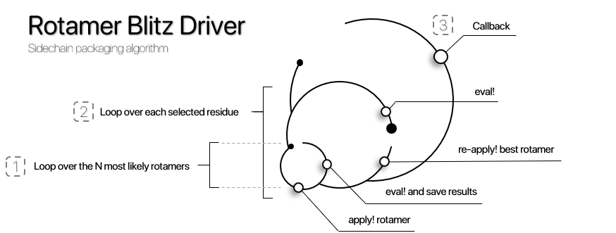

Rotamer Blitz Driver
The Rotamer Blitz Driver is an algorithm for sidechain packaging, exhaustively looping through all Rotamer possibilities and setting the most stable conformation for the Residue sidechain.
ProtoSyn.Peptides.Drivers.RotamerBlitz — TypeRotamerBlitz(eval!::Union{Function, ProtoSyn.Calculators.EnergyFunction}, rotamer_library::Dict{String, ProtoSyn.Peptides.BBD_RotamerLibrary}, n_first::Int, max_steps::Int, callback::Opt{ProtoSyn.Drivers.Callback}, selection::Opt{AbstractSelection})A RotamerBlitz Driver instance. As such, this object is callable as a functor with the following signature:
(driver::RotamerBlitz)(pose::Pose)This simulation performs a sidechain packaging algorithm, where each step (until a maximum of n_steps), all Residue instances in the provided Pose pose (in random order) may suffer a rotamer conformation change. As such, for each Residue instance, all n_first most likely Rotamer instances in the rotamer_library (according to the current backbone phi and psi dihedral angles) are applied (using the apply! method) and evaluated by the provided eval! EnergyFunction or custom function. Once all n_first most likely Rotamer instances are looped over, the most favourable (least energetic) one is re-applied. Each step, a call to an optional Callback callback is performed. A companion RotamerBlitzState DriverState instance is also updated each step and provided to the Callback callback.
Fields
eval!::Union{Function, EnergyFunction}- The evaluatorEnergyFunctionor custom function, receives aPoseposeas the single argument;rotamer_library::Dict{String, ProtoSyn.Peptides.BBD_RotamerLibrary}- The rotamer library used to sample newRotamerinstances from;n_first::Int- Maximum number ofRotamerinstances to try, ordered from most to less likely;max_steps::Int- The total number of simulation steps to be performed;callback::Opt{Callback}- An optionalCallbackinstance, receives two input arguments: the currentPoseposeand the currentDriverStatedriver_state;selection::Opt{AbstractSelection}- If provided, only selectedResidueinstances will be considered as target for theRotamerBlitzsimulation, otherwise, consider allResidueinstances.
See also
Examples
julia> rb = ProtoSyn.Peptides.Drivers.RotamerBlitz(energy_function, rot_lib, 1, 2, cb, an"CA")
⚒ Rotamer Blitz Driver:
├── ● Evaluator:
| └── 🗲 Energy Function (4 components):
| +----------------------------------------------------------------------+
| | Index | Component name | Weight (α) |
| +----------------------------------------------------------------------+
| | 1 | TorchANI_ML_Model | 1.000 |
| | 2 | Caterpillar_Solvation | 0.010 |
| | 3 | Bond_Distance_Restraint | 1.000 |
| | 4 | Cα-Cα_Clash_Restraint | 100.000 |
| +----------------------------------------------------------------------+
|
├── ● Callback:
| └── ✉ Callback:
| +----------------------------------------------------------------------+
| | Index | Field | Value |
| +----------------------------------------------------------------------+
| | 1 | Event | energy_step_frame |
| | 2 | Frequency | 10 |
| +----------------------------------------------------------------------+
|
├── ● Selection:
| └── FieldSelection › Atom.name = CA
|
└── ● Settings:
Rotamer Library: Set ✓
Max steps: 2
Search N first rotamers: 1ProtoSyn.Peptides.Drivers.RotamerBlitzState — TypeRotamerBlitzState{T <: AbstractFloat}(step::Int = 0, converged::Bool = false, completed::Bool = false, stalled::Bool = false, acceptance_count = 0)
RotamerBlitzState{T <: AbstractFloat}()A RotamerBlitzState instance is a DriverState that keeps track of a RotamerBlitz simulation status. Besides the default :step, :converged, :completed and :stalled fields, a RotamerBlitzState does not add any additional tracking fields specific for RotamerBlitz simulations.
See also
Examples
julia> ProtoSyn.Peptides.Drivers.RotamerBlitzState()
ProtoSyn.Peptides.Drivers.RotamerBlitzState(0, false, false, false)
Figure 1 | A schematic overview of the different stages in a RotamerBlitz Driver: (1) - For a single Residue, all N most likely Rotamer instances are applied (using the apply! method) and the resulting conformation's energy is evaluated; (2) - After trying all Rotamer instances, the less energetic conformation is recovered and applied. This is performed to all Residue instances in a given Pose, in random order; (3) - This process continues for a set amount of steps, resulting in a lower energy conformation for the sidechains in a Pose.